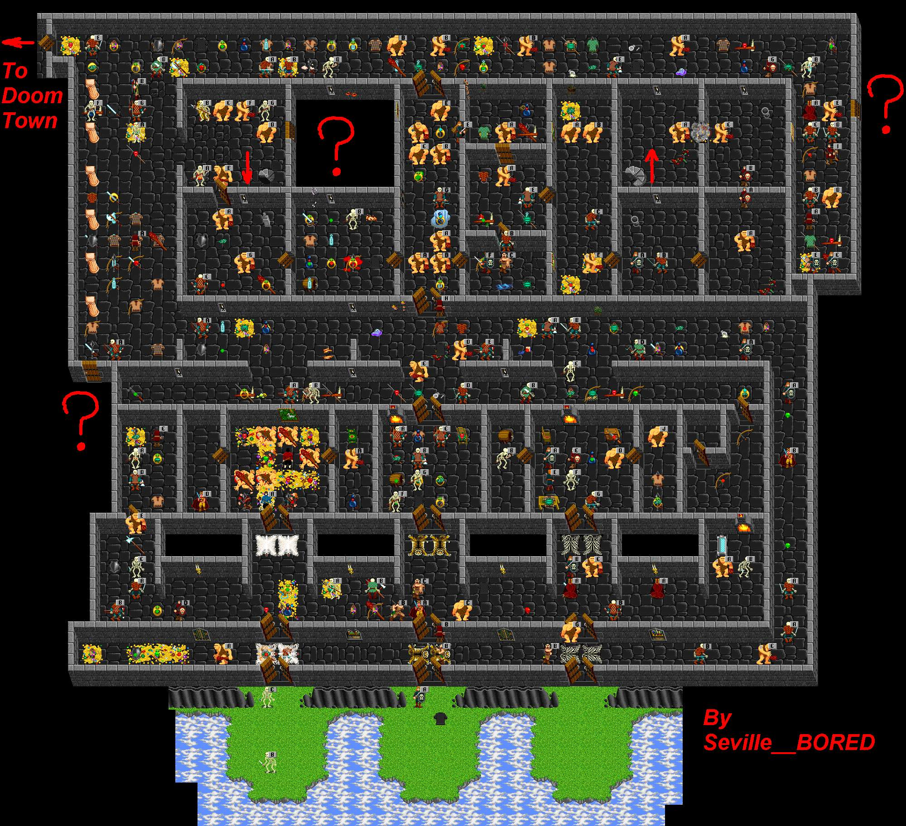

 |
| Giant Keep |
| A very dangerous place. Spear Giants and Psi crits lurk everywhere. Come here from Doom Town. Most of it is nontwiggable except the bottom of the grass areas. Take the stairs down to the Sewer area or the stairs up to the Upper Giant Keep. The question marks are locked doors. Not for the weak of heart. To the SouthEast behind a secret wall, lies the Ancient part of the Keep. |
| Back to Cobrahn. |
| To Doom Town path to Keep. |
| To the Ancient Keep. |
| To the Sewers. |